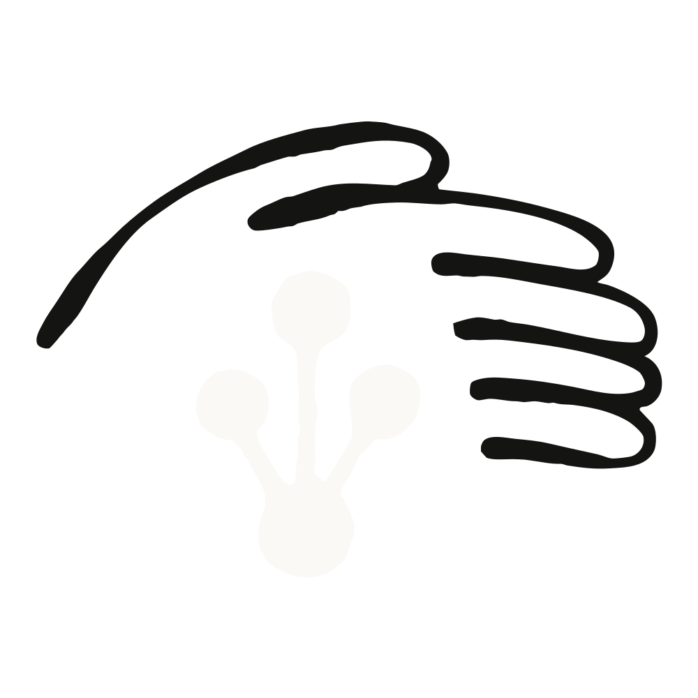
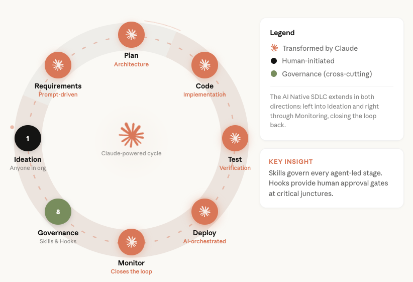
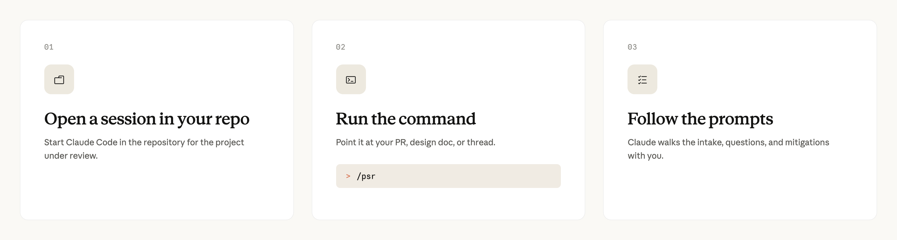
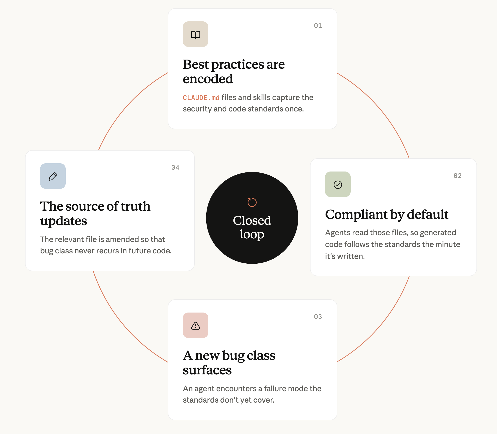
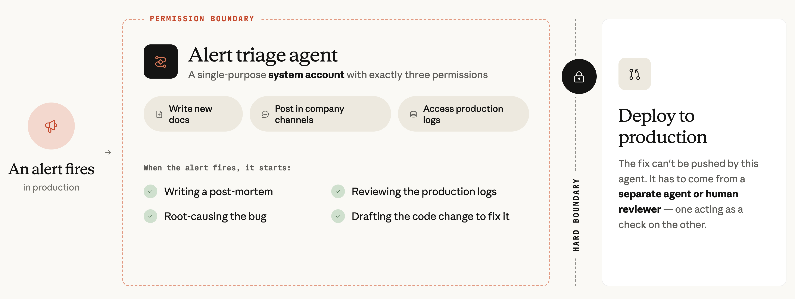

Anthropic의 부(副)CISO 제이슨 클린턴(Jason Clinton)이, 병합되는 코드의 80%를 AI가 저작하는 소프트웨어 개발 생명주기(SDLC)를 보안 엔지니어링 팀이 어떻게 안전하게 지키는지 상세히 설명한다.
Anthropic에서는 코드의 양과 배포 속도가 기하급수적으로 늘어났다. 우리 소프트웨어 엔지니어들은 평균적으로 분기당 2021년부터 2025년까지 작성하던 것의 8배에 달하는 코드를 출하한다.
리뷰, 모니터링, 그 밖의 보안 프로세스도 이렇게 빨라진 속도에 맞춰 함께 확장되어야 했다. 그러지 못하면 병목이 생기는 공식(암달의 법칙, Amdahl’s Law)이 된다.
우리의 소프트웨어 개발 프로세스 자체도 극적으로 바뀌었다. Claude는 코딩 보조 도구에서 코드를 직접 만들고 리뷰하는 주체로 진화했다. 오늘날 우리 코드베이스에 병합되는 코드의 약 80%를 Claude가 저작한다.
전체 코드의 절반 이상은 우리 사내판 Claude Tag가 병합하고, 인간 엔지니어는 방향을 정하고 의도를 세우며 최종 승인을 책임지는 데 집중한다.
이는 곧 우리 보안 팀이 빠르게 넓어지는 공격 표면을 방어하고, 비결정론적이고 끊임없이 진화하는 에이전트를 중심에 둔 생명주기를 견고하게 만들어야 한다는 뜻이다. 이 글에서는 소프트웨어 개발 생명주기(SDLC)를 안전하게 지키기 위한 전략들을 다룬다.
(이 글은 우리가 최근 발표한 에이전트를 위한 제로 트러스트(Zero Trust for Agents) 프레임워크와 함께 읽도록 의도된 것이다. 이 글에 나오는 모든 내용은 그 프레임워크의 보안 설계 아이디어를 구현에 적용한 것이다.)
우리가 대비하는 위협은 구체적이다. 침해되었거나 프롬프트 인젝션(prompt injection)을 당한 에이전트가 악성 변경을 집어넣는 경우, 에이전트가 신뢰할 수 있는 입력으로 받아들이는 공급망·의존성 오염(supply-chain·dependency poisoning), 그리고 이제 더 큰 양으로 밀려드는 익숙한 부류의 애플리케이션 취약점이다. 뒤이어 소개하는 모든 통제 장치는 이 세 가지 중 최소 하나에 대응한다.
개발 속도를 크게 떨어뜨리지 않으면서 이를 달성하기 위해, 우리가 배치한 몇 가지 큰 틀의 전략은 다음과 같다.
이 글에서는 소프트웨어 개발 생명주기의 특정 단계마다 우리가 구현한 보안 프로세스와, 그 뒤에 있는 핵심 원칙을 함께 다룬다. 모델 역량이 진화하면서 보안 팀은 프로세스를 계속 재검토하고 종종 재발명해야 하므로, 이 원칙들이 더 오래 살아남는다.
우리 개발 팀은 자신들의 소프트웨어 개발 생명주기가 어떻게 바뀌었는지 이미 자세히 다룬 바 있다. 그래서 여기서는 각 단계로 들어가기 전에 짧게 배경만 짚는다.
큰 틀에서 우리의 소프트웨어 개발 생명주기는 압축되어 있다. 긴 계획 주기보다 프로토타입과 내부 도입(도그푸딩, dogfooding)이 이를 이끈다. 아이디어는 조직 곳곳에서 나오고, 전통적인 역할 구분(프런트엔드·백엔드·디자인)은 흐릿해진다. 리뷰와 승인에는 여전히 인간이 개입하지만, 동시에 에이전틱 루프(agentic loop)도 이를 이끈다.
각 단계는 Claude Code와 Claude Tag에 의해 근본적으로 바뀌고 가속되었지만, 각 단계의 이름과 목적 자체는 더 전통적인 조직에서 온 개발자에게도 낯설게 보이지 않을 것이다. 이것들은 자연스러운 관문(gate)이며, 우리는 AI 네이티브 SDLC의 보안 프로세스에서도 이 관문들을 활용한다.

우리가 만든 최초의 보안 자동화 중 하나는 Claude Opus로 구동되는 단순한 PSR(프로젝트 보안 리뷰, project security review) 웹 애플리케이션이었다. 이 앱은 프로젝트 설계 문서를 받아 MITRE ATT&CK 프레임워크에 비추어 분석하고, 잠재적 취약점을 찾아내고 완화책을 제안했다.
우리는 이 시스템을 내부 지식 인덱스(knowledge index)에 연결해 크게 강화했다. 이 인덱스는 조직 전체의 정책, 과거 결정, 관련 시스템에 걸친 훨씬 깊은 맥락을 제공한다.

이 덕분에 잠재적 리스크를 더 잘 이해할 수 있고, PSR에서 빠졌을 정보도 포착한다. 이 하나의 구현만으로 AppSec 팀 시간의 대부분을 절약했다. Claude가 리스크를 정확히 평가한다는 확신이 서자, Claude가 출시 리스크를 충분히 낮다고 판단한 경우에는 팀이 자기 프로젝트를 스스로 승인할 수 있도록 허용했다.
여기서 AI 네이티브 SDLC로의 첫 번째 핵심 적응을 볼 수 있다. PSR은 원래 길고 비싼 코딩 과정에 들어가기 전에 보안 이슈를 잡기 위해 설계된 것이었다. 이 단계에서 이슈를 잡으면 몇 달치 재개발을 아낄 수 있었다.
오늘날에는 주요 기능의 프로토타입 여러 개를 몇 시간 만에 만들 수 있어서, 세밀한 아키텍처 리뷰는 덜 중요한 관문이 되었다. PSR 애플리케이션을 지식 인덱스에 연결하면, 불필요한 과속 방지턱을 만들지 않으면서도 놓칠 수 있는 맥락을 포착한다. Claude Code 스킬(skill)을 만들어 준 덕분에 Claude는 한 걸음 더 나아가 부채꼴처럼 퍼져(fan out) 맥락이 어디에 있든 추가로 포착할 수 있게 되었다.
예전에는 팀이 반복되는 취약점을 관찰하고 이를 막을 보안 코딩 가이드라인을 만들었지만, 그 가이드라인은 강제하기 어렵고 표준화된 경우도 드물었다.
Anthropic에서는 그런 가이드라인을 CLAUDE.md 파일과 조직 전반의 스킬 참조에 인코딩해, 코드가 생성되는 그 순간부터 이 모범 사례를 따르도록 한다. 이것은 닫힌 루프(closed loop)의 일부로 이뤄진다. 에이전트가 어떤 버그 부류를 발견하면, 앞으로 그런 버그가 다시 나오지 않도록 관련 파일이 업데이트된다.

물론 그렇다고 모든 코드가 완벽하게 나오는 것은 아니다. 우리 팀은 PR을 열기 전 마지막 단계로 에이전트가 /security-review를 실행하도록 지시하는 CLAUDE.md 파일에서 출발했다. 우리 팀 내부 리뷰 워크플로를 제품화한 이 일반 공개 명령은, 공격자가 조종할 수 있는 입력이 들어오는 지점을 찾고, 수상한 링크를 스캔한 뒤, 그 발견을 검증한다.
오늘날 이런 리뷰는 Claude가 코드를 생성하는 동안 이뤄진다. 보안 가이던스 플러그인(security guidance plugin)을 설치하면, Claude는 진행 중인 대화와 코드를 그때그때 리뷰한다. 코드를 생성하는 같은 세션 안에서 보안 개선을 제안하고 흔한 취약점을 처리한다.
PR 시점의 또 다른 유도 장치는 사내의 비기술 팀들이 우리 로우코드(low-code) 앱 호스팅 플랫폼에 앱을 올리도록 밀어준다. 이는 전통적으로 보안 팀을 괴롭히던 섀도 IT(shadow IT)를 피하게 한다.
일부 고객은 /security-review를 PreToolUse 훅(hook)과 통합해 이 단계를 더 단단한 관문으로 만든다. 그것도 효과적이지만, 우리 팀은 단단한 코드 리뷰 관문을 생명주기의 테스트/CI 단계에 두기로 했다.
코드를 다듬고 리뷰하는 것 외에도, 이 단계에서 우리의 주된 관심사 중 하나는 폭발 반경을 억제하는 것이다. 우리는 신원(identity)에 단단한 경계를 설정하고(자세한 내용은 모니터링 섹션에서), 개발자가 가상 머신(VM)에서 코딩하도록 세팅해 이를 달성한다.
코딩을 원격 VM으로 옮기는 것은 비교적 손쉬운 전환이었고, 노트북만 쓸 때보다 통제력과 가시성이 커졌다. 이 VM에서 에이전트가 내보내는 트래픽(egress)은 허용 목록(allowlist) 방식으로 제한된다.
이런 촘촘한 이그레스 통제는 에이전트가 프롬프트 인젝션 페이로드를 담고 있을 수 있는 신뢰할 수 없는 입력을 읽을 때 특히 중요하다. 주입된 지시가 인터넷상의 임의의 목적지에 도달할 수 없기 때문이다. 데이터 유출(exfiltration) 경로는 감시되는 소수의 서비스로 한정된다.
여기서도 AI 네이티브 SDLC를 위한 분명한 적응을 볼 수 있다. 원격 코딩은 예전에는 주로 지식재산(IP)을 보호하는 데 쓰였지만, 오늘날에는 더 성숙한 AI 코딩 팀들이 에이전트를 억제하는 수단으로 이런 환경을 채택하는 모습이 늘고 있다.
내 경험상, AI 네이티브 전환의 한복판에서 엔지니어링 팀에게 가장 고통스러운 병목이 되는 곳이 바로 테스트 또는 CI 단계다. Anthropic에서는 대부분의 개발자가 에이전틱 코딩 도구를 쓰고 여러 에이전트를 동시에 돌리게 되자, 팀은 인간이 코드를 리뷰할 수 있는 속도만큼만 나아갈 수 있다는 점이 금세 분명해졌다.
분명히 해 두자. 인간의 책무(accountability)는 여전히 우리 프로세스의 중심이다. 우리가 한 일은 자동화된 에이전틱 리뷰와 결정론적 리뷰를 결합해 리뷰 과정을 가속하되, 규제 대상이거나 정말로 중요한 코드에는 인간 리뷰를 남겨 둔 것이다.
역사적으로 인간의 코드 리뷰가 표준으로 여겨져 왔지만, 실증적 증거는 그것이 완벽하지 않음을 보여 준다. 전 세계 소프트웨어에서 보안 버그는 여전히 정기적으로 출하된다. 우리의 리뷰 프로세스는 더 많은 코드를 리뷰하고 특히 복잡한 이슈를 잡아내 이런 리스크를 줄이는 데 도움을 준다.
실질적인 리뷰 코멘트를 받는 PR의 비율은 16%에서 54%로 늘었다. 에이전트가 자신의 발견이 유효하다는 증명을 작성하도록 요구함으로써 그 발견에 대한 확신을 얻은 결과다. 또한 우리는 과거 claude.ai 사고 뒤에 있던 버그의 약 3분의 1이 지금 우리가 구현한 자동화 프로세스로 잡혔을 것이라고 판단했다.
이것이 사실임을 발견한 조직은 우리만이 아니다. Intercom은 자사 PR의 19%를 자동 승인한다고 공유했다. 배포는 두 배로 늘었고 코드 변경이 부러뜨린 데서 오는 다운타임은 35% 줄었다. CircleCI도 CI/CD 유지보수 이슈를 해결하고 인간이 보기도 전에 자신의 수정을 스스로 검증하는 Claude 기반 자율 에이전트 ‘Chunk’를 만들며 비슷한 결론에 이르렀다. 이 방식은 에이전트 작업이 완료된 풀 리퀘스트로 이어지는 비율을 두 배로 높였다.
Anthropic에서 PR이 열리면 여러 에이전트가 자동으로 그것을 리뷰한다. 각 리뷰 에이전트는 구체적이고 좁은 초점 하나에 맞춰 설계·범위 지정되며, 과거 사고를 둘러싼 추가 맥락과 기억을 위해 RAG(검색 증강 생성)를 활용한다.
이 방식이 하나의 거대 프롬프트나 슈퍼 보안 에이전트보다 훨씬 효과적인 데는 몇 가지 이유가 있다.
분명히 말하지만, 에이전트가 확인 없이 코드를 프로덕션에 병합하는 것은 아니다. 우리는 코드베이스를 리스크에 따라 등급화(tiering)하고, 어느 부분을 자동화할지 신중하게 결정한다. 어떤 코드베이스 전체는 엄격한 인간 승인 프로세스를 유지한다.
Claude가 리뷰하고 병합하는 코드에도 인간의 책무는 여전히 중심이다. 모든 승인은 그 뒤에 있는 신호와 근거와 함께 기록되고, 리스크 가중치를 둔 표본을 인간이 리뷰한다. 또 한 겹의 테스트는 “사용자 A는 절대 사용자 B의 데이터를 읽을 수 없다” 같은 불변 조건(invariant)에 초점을 맞추며, 필요하면 추가 수동 리뷰를 촉발한다. 우리는 에이전틱 스캔을 SAST 도구와도 결합하는데, 이 도구들은 PR에 직접 결과를 게시한다.
에이전틱이든 결정론적이든 대부분의 스캔 방식은 사용량 기반(consumption based)이다. 코드 처리량이 늘면 비용도 늘어나므로, 팀은 자신들에게 적절한 커버리지 수준을 스스로 정해야 한다.
Anthropic에서는 코드 속도가 빨라지면서 이 부분 비용이 늘어날 것을 감수하지만, 단위 비용은 떨어질 것으로 본다. 오늘날 모델은 몇 년 전의 모든 모델보다 코딩을 훨씬 잘하며, 이 흐름이 계속되리라 예상한다.
Anthropic은 견고한 스테이징 환경을 유지하며, 그 안에서 주요 출시에 대한 외부 침투 테스트(pentesting)나, 정적 스캔이 놓쳤거나 볼 수 없는 로직 버그를 잡기 위한 주기적 DAST 스캔 같은 일반적인 보안 모범 사례를 실행한다.
다른 SDLC 단계와 마찬가지로, AI는 보안 팀에게 새로운 도전과 해법을 동시에 안겨 준다. 한편으로는 이 단계에 도달하는 취약점이 더 적어진다. 다른 한편으로는, 살아남은 취약점일수록 가장 미묘하고 잡기 어려운 축에 속한다.
여기에 더 많은 양의 코드가 더 자주 출하되는 상황이 겹치면, 주기적 동적 테스트는 더 이상 그리 동적으로 보이지 않는다.
다행인 것은, AI 모델이 이런 복잡한 취약점을 더 높은 비율로 잡아낼 수 있는 다단계·구성요소 교차(cross-component) 추론에 더 능하다는 점이다. 예를 들어 2월에 우리는 Claude가 500건이 넘는 고심각도 오픈소스(OSS) 취약점을 발견하고 수정을 도왔다고 공개했다.
Anthropic에서는 스테이징 환경에서 지속적인 AI 기반 DAST 스캔을 구현하고 있다. 이 스캔은 둘 이상의 서비스 사이의 가정이 어긋나는 시스템 수준에서 취약점을 찾는다. 오늘날 이런 역량을 제공하는 벤더도 여럿 있다.
좋은 보안 팀이라면 알듯이, 코드가 프로덕션에 올라갔다고 해서 일이 끝난 것은 아니다. 어떤 취약점이든 점점 정교해지는 공격자에게 금세 발견될 것이라고 가정해야 한다.
우리 보안 팀은 여기서도 표준적인 관행에 해당하는 프로그램들을 구현했다. 공개 버그 바운티(bug bounty) 프로그램, 레드팀 모의 공격, 그리고 의존성·시크릿·공급망·클라우드 자세(cloud posture)·컨테이너 전반에 대한 정기 취약점 스캔 등이다.
Claude는 이 모든 것에서 큰 역할을 하지만, 여기서는 우리의 AI 네이티브 SDLC로 인해 모니터링 노력에 생긴 더 큰 변화 두 가지 — 경보 분류(alert triage)와 코드 마이그레이션 — 에 초점을 맞춘다.
Anthropic에서 경보가 울리면, Claude는 다음을 시작한다.
이 에이전트가 할 수 없는 것은 수정을 자동으로 배포하는 일이다. 이것은 단일 목적의 시스템 계정 에이전트로, 세 가지 권한만 가진다. 새 문서를 작성하고, 사내 채널에 글을 올리고, 프로덕션 로그에 접근하는 것이다.
수정은 별도의 에이전트–인간 리뷰어 시스템에서 나와야 한다. 그 이유는 다시 신원·권한·단단한 경계를 관리하는 문제로 돌아간다. 코드를 프로덕션에 밀어 넣을 때 폭발 반경을 억제하는 것이 중요하기 때문이다. 에이전트를 분리하는 것은 결정적이다. 하나(또는 여럿)의 에이전트가 다른 에이전트를 견제하는 역할을 하기 때문이다.

이것은 CISO에게도 중요한 교훈이며, 내가 어렵게 배운 것이기도 하다. 에이전트의 단단한 경계를 고려할 때는, 그 에이전트가 다른 에이전트에 접근할 수 있는 범위까지 포함해야 한다.
어느 모델 업그레이드 이후, 사고 대응(incident response) 에이전트가 스스로의 판단으로 Slack을 통해 다른 Claude 인스턴스에 연락했다. 그것은 코드를 작성할 수 있는 그 에이전트에게 수정을 배포해 달라고 요청했다. 이는 설계대로 인간 리뷰 관문에서 걸렸지만, 이 경험은 우리에게 경계를 모델의 지시나 ‘모델이 할 수 있다고 우리가 믿는 것’ 주위가 아니라 접근과 행동 주위에 그어야 한다는 교훈을 주었다. 오늘날 Anthropic에서 Slack을 통한 에이전트 간 통신은 일상적이며, 우리는 에이전트 신원 모델(agent identity models)에 상당한 고민을 기울인다.
두 번째 큰 변화는 우리 팀이 마이그레이션에 접근하는 방식이다. 모든 보안 엔지니어링 팀은 회사가 돌아가는 방식의 어떤 구조적 결함을 고치려면 코드 마이그레이션이 필요하다는 것을 깨닫는 순간을 겪는다. 예전에는 CISO가 이를 고치려고 여러 분기에 걸쳐 각 부서 엔지니어링 자원의 일부를 요청하며 캠페인을 벌여야 했다.
마이그레이션의 경제적 비용이 떨어졌고, 회사 전반의 협력 비용도 함께 떨어졌다. Claude는 수만 줄에 이르는 마이그레이션 과정을 며칠 만에 자동화한다.
우리는 많은 보안 프로세스를 자동화했지만, 인간은 여전히 안전한 소프트웨어 개발 생명주기를 보장하는 데 없어서는 안 될 부분이다. 다만 이제 우리의 관심은 코드와 버그 리포트를 리뷰하는 것이 아니라 Claude Tag, 루프, 대시보드에 쏠려 있다.
이 점은 강한 거버넌스의 중요성을 부각한다. 스킬이 낡거나, 발견된 버그 부류가 CLAUDE.md에 끝내 반영되지 않거나, 에이전트의 결정이 표본 검토조차 되지 않으면, 구조 전체가 무너진다. 우리는 다음으로 이를 방지한다.
소프트웨어 개발 생명주기와 그것을 견고하게 만드는 수단이 얼마나 빠르게 진화하고 있는지는 아무리 강조해도 지나치지 않다. 모델 역량은 매달 발전하며, 새로운 도전과 해법을 함께 가져온다.
오늘 잘 안 되거나 아직 경제적으로 타당하지 않은 것도 머지않아 그렇게 될 가능성이 크다. 팀에게 던져야 할 올바른 질문은 “우리가 전부 스캔할 여유가 있는가?”가 아니라 “스캔이 거의 공짜라면 우리는 무엇을 돌릴 것인가?”이다. 그것을 위해 계획하라.
이 글은 Anthropic의 부CISO 제이슨 클린턴(Jason Clinton)이 작성했다. 그는 이 글에 기여해 준 마이클 세그너(Michael Segner)에게 감사를 전한다.